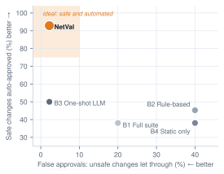
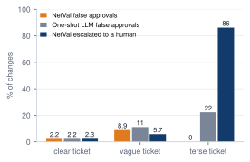

01The problem
Configuration changes are a leading cause of network outages (one maintenance command took down Meta's backbone in 2021). Configs now ship as CI/CD pull requests, but the gate does not know what a change is meant to do.
- Fixed full suite: every intended change looks like a failure; a change that silently does nothing passes.
- Rule-based selection: misses effects away from the changed device.
- Static verifiers: blind to intent and to MTU, timing and load faults.
02Research gap
- No study compares an intent-aware agent with a fixed CI suite on the same changes.
- The false-approval rate of an LLM deployment gate is not reported.
- The effect of ticket quality (clear → ID only) is unknown.
- Which twin tier (static vs. emulation) catches which fault is not reported.
03Contributions
- NetVal gate: twin finds the blast radius, LLM labels it, rules decide.
- Two-tier twin: static + emulation (MTU, failover, load).
- Benchmark: 120 changes × 3 tickets, oracle-labelled.
- Paired evaluation: 4 baselines, 6 ablations, significance tests.
04Dataset & setup
clear: “On leaf3 permit tcp/5432; only stage-a1 → db-a1 opens.”
vague: “Let the staging server talk to the database.”
terse: “fix ticket #8768”
05Method: the NetVal gate
- The twin finds what changed: every flow, route, adjacency, path and load shift.
- The LLM only labels each difference intended, unintended or unsure; labels compile into typed tests, never free code.
- Code decides: missing intent becomes ESCALATE, never a guess.
06Main results
| Method | Detect. | False appr. | False block | Auto-appr. | Tests | Min |
|---|---|---|---|---|---|---|
| B1 Full suite | 80.0 | 20.0 | 61.9 | 38.1 | 1,559 | 20.5 |
| B2 Rule-based | 60.0 | 40.0 | 54.8 | 45.2 | 120 | 1.8 |
| B4 Static only | 60.0 | 40.0 | 0.0 | 38.1 | 6 | 0.8 |
| B3 One-shot LLM | 97.8 | 2.2 | 50.0 | 50.0 | 28 | 3.7 |
| NetVal | 97.8 | 2.2 | 4.8 | 92.9 | 12 | 2.4 |
| NetVal, 3-run mean | 96.3±1.3 | 3.7±1.3 | 3.2±1.4 | 95.2±2.4 | 12 | 2.4 |
Rates in %, clear tickets, 87 unseen data-centre and ISP changes (prompts tuned on the campus network only). vs. B1: McNemar (Holm) p ≤ 0.001 for detection and false blocks. B4 never blocks a safe change but escalates 60% of all changes.
07vs. base papers
| Base paper / method | Detect. | False appr. | Time |
|---|---|---|---|
| Aether (2026)* | 94 | n/r | 6–7 min |
| CORNETTO (2026)* | n/a | <6 – 34.2 | n/r |
| One-shot LLM† | 97.8 | 2.2 / 22.2‡ | 3.7 min |
| Verifier-only gate† | 60.0 | 40.0 | 0.8 min |
| NetVal | 97.8 | 2.2 / 0.0‡ | 2.4 min |
* as reported, on the paper's own data (CORNETTO: regression rate). † re-implemented on our data. ‡ clear / ID-only tickets.
08Ablation study
| Variant | False appr. | False block | Auto-appr. | Min |
|---|---|---|---|---|
| Full NetVal | 2.2 | 4.8 | 92.9 | 2.4 |
| − impact analyzer | 4.4 | 47.6 | 47.6 | 6.0 |
| − invariant guard | 4.4 | 2.4 | 95.2 | 2.3 |
| Tier 1 only (static) | 2.2 | 7.1 | 57.1 | 0.9 |
| Tier 2 only (emulation) | 2.2 | 4.8 | 92.9 | 4.8 |
| − feedback loop | 2.2 | 4.8 | 92.9 | 2.4 |
| Local 7B model† | 31.2 | 25.0 | 68.8 | 4.3 |
The impact analyzer matters most. Without Tier 2, missing evidence turns into escalations, not risk. The replan loop never fired with the hosted model. † Qwen2.5-7B on a 32-change subset.
09Worked example: over-broad ACL
10Safer and more automated

11Ticket quality

Vague tickets raise false approvals to 8.9%. With an ID-only ticket NetVal approves nothing and escalates 86%; the one-shot LLM cannot abstain and lets 22% of unsafe changes through.
12Conclusion
A twin that computes what changed plus an LLM that judges only whether the ticket explains it gives a gate that beats running every test, is 8.6× faster, costs ~US$0.015/PR, is stable (κ = 0.92) and fails safe without intent.
- Limits & next: own Python twin, synthetic changes, modelled CI time; next, real Batfish + containerlab and real tickets.